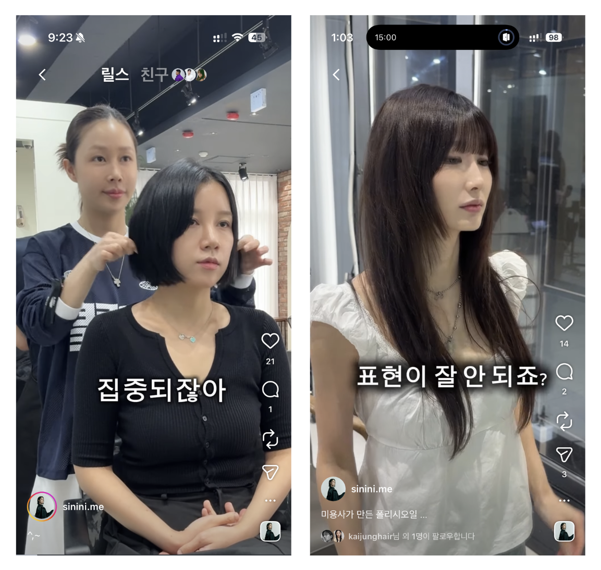

이시니
브랜드 전략 가이드라인
미용 18년, 포항 유일의 헤어 컨설팅. 별점 4.92·리뷰 7,540이 증명한 실력을 화면 위로 올려, ‘안목을 파는 사람’으로 세우기 위한 인스타그램 전략 문서입니다.
다루는 것
- 사람·데이터·본인이 보는 현재 진단
- 한 줄 정체성 · 페르소나 · 완성형 질문
- 콘텐츠 4포맷 · 인터뷰 포맷
- 실행 로드맵(주 2회·4주 램프업)
- 모델 협찬·게시 운영 · 톤앤매너 · 체크리스트
- 레퍼런스 분석(my.o_)
다루지 않는 것(후속)
- 콘텐츠 촬영·편집 실무
- 동의서 법률 문구 검토
- 데이터 부록(차트 편입)
- 소재 뱅크(촬영 소재 카드)
- 기대 지표(KPI) 세팅
지금의 이시니
시작하기 전에 분명히 해 둘 것이 있습니다. 이시니님은 미용 18년, 포항에서 유일하게 ‘헤어 컨설팅’을 내건 전문가이고, 별점 4.92에 리뷰 7,540개가 쌓인 매장을 운영합니다. 이 문서는 그 실력을 의심하지 않습니다. 다루는 것은 기술의 깊이가 아니라 그 실력이 지금 화면에서 가장 강하게 보이는 자리에 놓여 있는가입니다.
사람들이 화면에서 이시니님을 무엇으로 보는지, 데이터는 무엇에 반응하는지, 본인은 무엇을 하고 싶다고 말했는지 — 그 셋이 어긋나는 지점을 정리하고 한 줄로 압축합니다.
사람들은 이시니님을 무엇으로 보는가
릴스 190개를 조회수로 줄 세우면 두 개가 압도적으로 튀어나옵니다. 그런데 이 도달의 ‘결’을 들여다보면 이야기가 달라집니다. 160만 영상의 댓글은 동경이 아니라 논쟁이었습니다.
‘저렇게 되고 싶다’가 아니라 ‘저게 더 나은가?’라는 갑론을박으로 퍼진 것입니다. 댓글을 단 사람들은 예약을 고민하는 고객이 아니라 지나가다 한마디 보탠 구경꾼에 가깝습니다. 즉 가장 큰 숫자가 가장 좋은 신호는 아닙니다. 도달은 폭발했지만 연결은 약했고, 때로는 반감을 불렀습니다.
데이터는 무엇에 반응하는가
같은 데이터를 다른 각도에서 보면 진짜 신호가 보입니다. 올해 5월에 올린 영상 하나 — “특별할 것 하나 없는 미용 인생이라고 생각했어요, 그냥 매일 조금 더 잘하려고 버텼던 시간들”로 시작하는 이시니님 본인의 이야기입니다. 조회수는 5만으로 바이럴의 30분의 1이지만, 좋아요 362·댓글 17 — 최근 게시물 중 가장 높은 연결입니다.
한 편의 영상이 고객의 문의 의도와 디자이너의 공감을 동시에 끌어냈습니다. 이게 이번 가이드라인의 가장 중요한 발견입니다. 반대로 시술 자체를 자랑하는 영상(질감·모즈펌)은 도달 6~8만이어도 좋아요는 100 안팎. 기술이 화면에 있을 때 사람은 보고 지나가고, 사람과 관점이 화면에 있을 때 머물고 반응합니다.
이시니님이 직접 말한 것
5월 27일 미팅에서 정리한 방향은 분명했습니다.
- 타깃이 고객에서 직원·디자이너로 넓어지며 콘텐츠 방향을 잃었다.
- 계정은 하나로 두되 콘텐츠는 나눠 가고, 고객용으로 먼저 키운 뒤 디자이너 소구를 얹겠다.
- 실무를 줄여 콘텐츠 시간을 확보하고, 운동처럼 주 2회 강제 루틴으로.
- ‘얼굴형 공식’ 콘텐츠는 다시 하지 않겠다 — “얼굴형으로 스타일이 정해지지 않는다”.
- 본인 노출은 점진적으로. “브랜드를 키워 놓고 나오는 게 좋다.”
핵심은 한 문장으로 모입니다. 기술 자랑이 아니라, 사람과 관점을 드러내고 싶다.
세 가지가 어긋나는 지점
첫째, 가장 큰 도달 레버가 본인이 접은 영역입니다. 역대 1위 580만은 ‘얼굴형 고민→해결’ — 철학상 그만둔 그 포맷입니다. 답은 포맷을 버리는 게 아니라 재료를 바꾸는 것. ‘얼굴형 공식’이 아니라 ‘그 사람의 무드·취향을 읽어 어울리는 걸 찾아주는’ 결로 같은 “고민→해결” 구조를 가져오면, 도달력은 살리고 철학은 지킵니다.
둘째, 큰 숫자와 진짜 고객이 갈라져 있습니다. 변신 바이럴은 구경꾼·반감을, 본인 서사는 문의 의도와 팬을 만듭니다. → 계정은 하나, 콘텐츠는 다각화하되 한 편엔 한 사람만, 주 초점은 고객용. 고객용이 반응을 얻으면 디자이너 신뢰는 따라옵니다.
셋째, 신뢰가 이시니님이 아니라 디자이너들에게 쌓이고 있습니다. 리뷰의 주인공은 시니 원장이 아니라 지유·미오·가현 실장입니다. 양날입니다 — 한쪽은 위험 분산, 다른 한쪽은 이시니님이 키운 디자이너가 실명으로 사랑받는다는 증거이자 “여기서 크면 나도 그렇게 된다”는 디자이너 트랙의 가장 강력한 소구입니다.
한 줄 정체성
기술은 이미 증명됐습니다. 이제 화면에 올려야 할 것은 그 기술을 쓰는 사람의 눈과 기준입니다.
무엇을,
누구에게,
어떻게
PART 1이 “이시니님은 안목을 파는 사람”이라는 자리를 잡았다면, PART 2는 그 안목을 화면에서 어떻게 보여줄 것인가입니다. 콘텐츠는 받는 사람(페르소나)별로 다각화하되 한 편에는 한 사람만 향하게 하고, 비중의 주 초점을 고객용에 둡니다.
누구에게 — 고객 페르소나
리뷰가 고객을 또렷이 그려 줍니다. 포항·경북의 20–30대 여성이 중심이고, 그들이 들고 오는 것은 스타일 이름이 아니라 고민입니다.
- “둥근 얼굴에 목이 짧아 정형돈 단발 될까 봐 무서웠다” — 얼굴형·비율 고민
- “숱이 적어 볼륨이 안 산다 / 손상이 심하다” — 모질 고민
- “예쁜 머리가 뭔지 모르겠는데 알아서 잘해줬다” — 무엇이 어울리는지 모르는 고민
구체적인 스타일을 들고 오는 사람과 뭘 해야 할지 몰라 그냥 오는 사람 — 이시니님은 둘 다 만족시킵니다. 이 “몰라도 읽어서 찾아준다”가 곧 안목의 콘텐츠화 지점입니다.
콘텐츠 포맷 — ‘누구에게 말하는가’로 나눈다
포맷을 기능(펌·컷)이 아니라 받는 사람으로 나눕니다. 아래 넷은 각각 다른 한 사람을 향합니다.
가장 중요한 원칙 — 한 편에 한 사람
가장 흔한 실수는 한 편으로 여러 사람에게 동시에 말하려는 것입니다. 고객도 디자이너도 한 영상에 다 담으면 결과는 아무에게도 닿지 않습니다. (자세히: RE:KIT 78 「한 명에게 말하듯 써야 1만 명에게 닿는다」·브랜딩 클래스 ‘타겟’ 편)
- 팔로워 100명일 땐 얼굴이 보이는 한 사람에게 말했고, 1만이 되면 ‘팔로워’라는 집단에게 말합니다. 집단에게 하는 말은 개인에게 닿지 않습니다.
- “20–40대 여성”은 타깃이 아닙니다(2천만 명). 좁게 = 명확하게. 명확할수록 한 사람에게 꽂히고, 그 한 사람이 열 명에게 퍼뜨립니다 — 좁혀야 더 퍼져요.
- 사람은 “이거 나한테 하는 얘기 같아”가 들 때 저장·문의합니다. 그 느낌은 구체성에서.
| 단계 | 이시니님 고객 예 |
|---|---|
| ① 분류 | 포항 20대 후반 여성 |
| ② 상황 | 첫 단발을 하고 싶은데 얼굴이 둥글어 망설이는 |
| ③ 감정 | “정형돈처럼 될까 봐 무섭다 / 뭐가 어울리는지 모르겠다” |
감정까지 내려가면 첫 문장(훅)이 달라집니다. “첫 단발 추천드려요”가 아니라 → “둥근 얼굴이라 단발이 무서워 계속 미루셨다면”. 콘텐츠 하나 만들기 전에 이 한 사람을 먼저 정하세요.
페르소나는 ‘완성형 질문’이다 — 맥락·고민·결과
‘한 사람’을 무엇으로 채우느냐가 관건입니다. 흔한 함정은 빈 키워드로 사람을 잡는 것. ‘단발’, “머릿결이 상했어요”는 그 자체로 텅 비어 있습니다 — ‘수분 크림’이라는 검색어가 환절기 당김인지 선물용인지 알 수 없는 것처럼요. 마케팅은 결국 소통이고, 소통은 상대의 ‘완성형 의도’를 알 때만 됩니다.
| 칸 | 묻는 것 | 이시니님 고객 예 |
|---|---|---|
| 맥락 | 무슨 일·어떤 마음 때문에 | 어린 남자친구가 신경 쓰여서 · 복귀를 앞두고 · 소개팅이 생겨서 · 새 출발 |
| 고민 | 뭐가 걸려 못 했나 | 얼굴형 · 단발 트라우마 · 볼륨 없음 · 모름 |
| 결과 | 어떻게 보이고 싶나 | 어려보이게 · 분위기 있게 · 전문직처럼 · 단아하게 |
“남자친구가 다섯 살 어려서 신경 쓰이는데(맥락), 더 어리고 귀엽게 보이고 싶어요(결과) — 근데 단발 실패한 적이 있어 무서워요(고민).”
‘맥락’은 시기를 콕 집어 묻는 게 아닙니다(“왜 하필 지금?”은 어색하죠). 무슨 일·어떤 마음으로 바꾸고 싶은지, 그 사연이 자연스럽게 나오면 됩니다. 그 사연이 담긴 첫 문장에 같은 처지의 한 사람이 “어, 내 얘기네” 하고 멈춥니다. (참고: RE:KIT 77)
디자이너 신뢰는 따라온다
고객용 콘텐츠가 쌓이면 디자이너 모객은 좇지 않아도 따라옵니다. “저 안목을 배우고 싶다”가 1-2의 서사 영상에서 이미 나왔으니까요. 여기에 가끔 명시적인 디자이너 콘텐츠(승급·교육·철학)를 같은 계정에 얹으면 됩니다 — 그때도 한 편은 디자이너 한 사람만 향하게.
그리고 이것이 이시니님의 확장(교육·지점) 욕망과 이어집니다. 안목이 시스템과 교육으로 디자이너에게 흐른다는 것이 매장의 정체성이 되면, 그 자체가 모객 메시지이자 지점·교육사업으로 복제할 수 있는 자산이 됩니다.
어떻게
만드나
PART 2가 “어떤 포맷을 누구에게”였다면, PART 3은 그 한 편을 실제로 어떻게 찍고 쓰는가입니다.
고객 콘텐츠 — ‘결과’가 아니라 ‘속’을 보여라
고객 콘텐츠가 조회·공유를 만드는 건 예쁜 결과 때문이 아닙니다. 보는 사람이 “나를 본다·내 마음을 안다”고 느끼기 때문이에요. 그 길은 둘입니다.
시술 전 고객이 속으로 했던 망설임을 1인칭 자막으로 화면에 꺼냅니다. 결과가 아니라 ‘마음’이 주인공. 보는 사람은 “어, 내 얘기네” 하고 저장·공유합니다.
boutique_hwan · 13K · 148만뷰 · 리포스트 264 · 공감형 위너
고객 얼굴·고민에서 읽은 것 한 가지를 짚으며 “왜 이 디자인인지”를 짧고 쉽게 설명합니다. ‘읽는 행위’를 줌·손짓으로 보이면 안목이 눈에 보여요.
fruty.loa · 5.2K · 안목형 — 남이 하면 정보, 이시니가 하면 안목.
A. 공감형 만들기
B. 안목형 만들기
있는 걸 드러낸다 — 증거를 ‘장면’으로 번역
플레이스 리뷰의 “원하는 스타일로 잘해줘요”(5,267)·“추천을 잘해줘요”(3,415)는 강력한 증거지만, 리뷰 안에 묻혀 고객에게 닿지 않습니다. 게다가 이건 결론이에요 — 누구나 자기 입으로 “잘해요”라고 하니, 결론만으론 안 믿깁니다.
그래서 콘텐츠가 할 일은 그 결론을 ‘과정·장면’으로 번역해서 고객이 스스로 결론 내리게 하는 것. 새 걸 짜낼 필요가 없어요. 이미 있는 강점을 어떤 장면으로 보이게 할지만 정하면 됩니다.
| 이미 있는 것 (증거) | → 시각화 (보이는 장면) |
|---|---|
| “원하는 스타일로 잘해줘요” 5,267 | 고객 말 듣고 무드 읽어 제안하는 상담 장면 |
| “추천을 잘해줘요” 3,415 | “이 얼굴엔 이게” 짚으며 줌으로 설명 ← DYpFLhrJ1im이 바로 이 답 |
| “시술이 꼼꼼해요” 3,939 | 디테일 작업 클로즈업 + “왜 이렇게” 한 줄 |
| “트렌디해요” 2,360 | 요즘 결을 이시니 식으로 해석하는 장면 |
| 재방문·정착 (67번째 방문) | 단골 변천사 / “또 오셨네요” |
| 디자이너 실명 팬덤 (지유·미오) | 디자이너별 시그니처 소개 |
→ 기획이 막힐 때: “뭘 새로 만들지?”가 아니라 “이미 있는 이 강점을, 어떤 장면으로 보이게 할까?”를 묻습니다. 발명이 아니라 번역.
모든 콘텐츠의 첫 문장 — 제품이 아니라 그 사람의 상황
첫 문장에 펌·컷이 나오면 그 순간부터 ‘파는 콘텐츠’가 됩니다. 첫 문장은 읽는 사람의 상황이어야 해요.
- ✕ “레이어드 C컬펌 시술 영상입니다”
- ◯ “아침마다 부스스해서 묶고만 다니셨죠?”
그리고 전문가의 언어가 아니라 고객의 언어로. “모발 손상도”가 아니라 “끝이 푸석거려서 자꾸 자르게 돼요”. 고객이 검색창에 칠 말, 친구한테 할 말로 시작하세요.
변신(①) — ‘결과’가 아니라 ‘읽은 것’을 보여라
흔한 변신 영상은 비포–애프터만 보여줍니다. 그러면 보는 사람이 평가자가 돼요(160만이 그렇게 논쟁이 됐죠). “이 분은 어떤 고민·무드였고, 그래서 왜 이걸 골랐는지”를 한 줄 깔아 주세요 — “둥근 얼굴에 목이 짧아 단발이 무서우셨던 분. 그래서 턱선을 비우고 사선으로 흘려 길이 착시를 줬어요.” 그러면 평가가 아니라 납득이 되고, 고민이 겹치는 사람은 멈춥니다. 읽은 것을 보여주는 게 곧 안목의 증명입니다.
진단 과정(②) — 카메라를 ‘상담’에 둬라
완성 컷이 아니라 읽는 장면을 찍으세요. 머리를 만지며 “이쪽 숱이 많아 무거워 보였어요”, “이 길이면 손질이 힘드니 여기서 끊었어요” — 왜 이 결정을 했는지를 말로. 가장 많이 고른 “원하는 스타일로 잘해줘요”를 자랑이 아니라 장면으로 보여주는 겁니다.
본인 서사(③) — 권위·신뢰·팬덤 엔진
이건 ‘양념’이 아닙니다. PART 1에서 진단한 “사람이 없다”의 정답이자, 이시니님이 원한 영향력·확장의 동력입니다. 권위·신뢰·팬덤은 기술이 아니라 사람에서 나옵니다.(레퍼런스 my.o_가 같은 업종에서 53만을 만든 엔진 — 부록.) 5만 영상이 통한 건 거창한 성취가 아니라 “버틴 시간”이었기 때문. 여기에 다음을 이시니님 단계로 작게 얹습니다.
- 가치·신념을 일관되게 — 미용을 넘어선 생각을 정기적으로. 팬은 머리가 아니라 사람의 생각을 따릅니다.
- 취약성·솔직함 — 완벽한 전문가 말고 흔들렸던 18년. 신뢰는 완벽이 아니라 솔직함에서.
- 고객을 ‘주인공’으로 — 변신 영상에서도 주인공은 시술이 아니라 그 사람의 이야기.
- 팬 호명·소속감 — 단골·팬을 부르는 이름, 함께한다는 느낌.
- 성장 여정 공유 — 디자이너를 길러내고 매장을 키우는 과정 자체가 팬이 동참할 서사.
단, 기부·책 출간 같은 대형 장치는 나중. 지금은 가치 노출 + 취약성 + 고객 주인공화부터.
디자이너(④) — 가르치듯 말고 ‘여기서 크면 이렇게 된다’
승급·교육을 자랑처럼 나열하지 말고 한 디자이너의 변화로 보여주세요. “도연이가 매일 새벽까지 연습해서 디자이너로 올라섰다”처럼 — 보는 인턴이 “나도 여기면 저렇게 되겠다”를 느끼게.
인터뷰 포맷 — 고객의 ‘완성형 질문’을 캐내는 법
①변신·②진단·③서사의 재료는 전부 고객의 이야기에서 나옵니다. 그런데 “헤어 고민 있으세요?”라고 물으면 “머릿결이 상했어요” 같은 현상만 나와요. 2-4의 맥락·고민·결과를 끌어내려면 질문을 설계해야 합니다.
헤어모델을 받을 때 미리 스토리를 채굴합니다.
대본 낭독은 어색합니다 — 대화처럼, 고객 60 : 시니 40으로.
실행 로드맵
방향이 아무리 좋아도 안 올리면 0입니다. 5/27에 정한 대로 운동처럼 주 2회 강제 루틴으로 가되, 처음부터 무리하지 않게 마찰이 낮은 것부터 시작합니다.
꾸준함의 엔진 — 기획은 ‘발상’이 아니라 ‘매칭’
콘텐츠가 끊기는 건 게을러서가 아니라, 매번 “뭘 만들지 발상”하려 하기 때문입니다. 발상은 금방 고갈돼요. 꾸준한 기획은 발상이 아니라 매칭이어야 합니다 — 백지에서 짜내지 않게.
- ① 고객이 곧 소재다. 오늘 온 고객의 맥락·고민·결과(인터뷰에서 캐낸 것)가 이미 릴스 한 편의 컨셉입니다. 매일 고객이 오니 소재가 마를 수 없어요.
- ② 포맷은 메뉴에서 고른다. 공감형·안목형·변신·꿀팁·본인서사 — 5개 메뉴 중 선택만. 매번 새로 발명하지 않습니다.
- ③ 원소스 멀티유즈. 고객 한 명 1회 촬영 → 변신(결과) + 공감(망설인 마음) + 안목(왜 이 디자인) + 꿀팁(손질). 기획 한 번에 2~3편.
무엇부터 — 마찰 낮은 순서로
처음부터 변신 영상(모델 섭외·동의·촬영)을 몰아치면 부담돼서 멈춥니다. 그래서 첫 4주는 혼자서도 올릴 수 있는 것부터 켜고, 변신은 협찬 준비(PART 5)가 된 뒤 얹습니다. 한 주에 두 편, 이렇게요.
| 주차 | 이번 주에 올릴 두 편 (쉬운 것 → 어려운 것) |
|---|---|
| 1주차 | ① “내가 미용을 하는 이유” 짧은 이야기 (혼자 촬영) · ② 흔한 고민 하나 풀이 — 예: “앞머리가 자꾸 뜨는 이유” |
| 2주차 | ① 상담 장면 한 편 (왜 이 디자인을 권했나) · ② 첫 변신 영상 — 동의서 적용해서 |
| 3주차 | ① 우리 디자이너 이야기 또는 내 이야기 · ② 변신 |
| 4주차 | ① 손질 꿀팁 · ② 변신 — 이쯤 되면 주 2회가 몸에 붙습니다 |
왜 매주 ‘많이 퍼질 것 1 + 오래 남길 것 1’인가
매주 두 편을 올리되, 성격을 일부러 나눕니다.
- 많이 퍼질 것(도달) 1편 — 변신·공감처럼 사람들이 멈추고 공유하는 영상. 새 사람을 데려옵니다.
- 오래 남길 것(연결) 1편 — 상담 장면·내 이야기처럼 신뢰를 쌓는 영상. 데려온 사람을 붙잡습니다.
한쪽만 하면 무너져요. 퍼지는 것만 하면 구경꾼만 늘고(160만이 그 함정이었죠), 신뢰 영상만 하면 새 사람이 안 옵니다. 데려오고(도달) + 붙잡는(연결), 이 두 박자가 같이 가야 합니다. 한 주를 시작할 때 “이번 두 편은 각각 누구 한 명에게?”만 정하면 돼요.
멈추지 않게 하는 장치
- 완벽 말고 발행. “마음에 안 들어서 안 올림”이 가장 큰 적입니다. 80%면 올립니다.
- 한 주치 페르소나를 미리. 주초에 두 사람을 정해두면 촬영이 쉬워집니다.
- 반응 기록. 어떤 페르소나·훅이 반응했는지 2주마다 보고 잘된 결을 늘립니다.
운영 가이드
모델 협찬·게시 운영
미용실 변신 콘텐츠는 모델이 보여야 하고, 보통 무료(또는 할인) 시술과 촬영을 맞바꿉니다. 핵심은 “최대한 공개하되 취소가 안 나오게”. 초상권 동의는 법으로 완전히 묶을 수 없으니, 내려달라 할 마음 자체를 줄이는 운영이 답입니다.
톤앤매너
이시니님의 톤은 한 단어로 ‘정돈된 전문가’. 흔한 미용실 콘텐츠의 요란한 자막·과장된 비포애프터·전단지 톤과 반대편에 서세요.
- 비주얼 — 프리미엄·정교·신뢰. 자막은 최소·깔끔하게. 본인이 나올 땐 연출보다 대화하듯.
- 텍스트 — 고객의 언어로, 첫 문장은 상황으로. 협박·결핍이 아니라 해결·성취. 따뜻한 경어, 과한 격식은 덜어.
- 관통하는 한 줄 — 어떤 편이든 기술 자랑이 아니라 ‘읽고 찾아주는 안목’이 드러나야 합니다.
폰트·자막 — 브랜드의 말투
자막은 이시니님의 ‘정돈된 전문가’ 톤이 가장 먼저, 가장 자주 드러나는 자리입니다. 원칙은 하나로 모입니다 — 자막은 ① 전달력이 먼저, ② 기억에 남아야 한다. 썸네일도 영상 중간 자막도, 세련됨은 그 둘을 해치지 않는 선에서.
- 폰트는 1~2종으로 고정. 영상마다 폰트가 바뀌면 브랜드가 흐려집니다. 절제된 고딕(예: Pretendard·G마켓산스·에스코어드림) 하나를 정해 끝까지. 손글씨체·둥근 팝체·과한 장식체는 프리미엄 톤을 깨니 지양.
- 흰색 기본 + 포인트 1색. 외곽선·그림자는 가독성에 필요한 만큼만 — 과하면 촌스러워집니다.
- 한 화면에 한 메시지. 핵심 한 줄만 크게, 부연은 작게. 위치는 일관되게(보통 중앙 또는 중앙 하단), 읽을 시간만큼 머물게.
- 핵심어만 강조(굵기·색). 문장 전체를 강조하면 아무것도 강조되지 않습니다.
핵심은 일관성입니다. 모든 영상에 같은 폰트·위치·색이 반복되면 보는 순간 “아, 이시니구나”가 됩니다 — 그게 자막이 브랜드가 되는 지점입니다.
먼저 직접 비교해 봅니다. 지금 이시니님 자막과, 결이 다른 릴스들의 자막을 캡처해 모았어요. 기본 진행 자막(b)과 포인트·강조 자막(p)을 각각 슬라이드로 묶었어요. 좌우 화살표나 아래 점을 눌러 한 장씩 넘기며 비교해 보세요.

지금 — 현재 상태 · 얇은 회색 기본 자막이 배경에 묻혀 잘 안 읽히고 포인트가 보이지 않습니다. 미용의 ‘정돈된 전문가’ 톤과도 거리가 있어 칙칙하고 직관적이지 않은 인상. 여기서부터 출발합니다.
기본 진행 자막 (b) · 릴스가 흘러가는 동안 깔리는 본문 자막입니다. 깔끔한 고딕·얇은 흰색이 기본이고, 영문 세리프(b3)로 프리미엄 무드를, 한두 곳은 색 알약(b6)으로 키워드를 살립니다. 이시니님 베이스로 가장 가까운 결 — 배경에 묻히지 않게 가독성만 확보하면 됩니다. (마지막 칸은 영상 예시)
포인트·강조 자막 (p) · 주제·핵심 키워드를 때리는 자막입니다. 굵게·크게·1색 포인트(크림/옐로우)로 키워드만 강조하고, 줄을 쌓아 시선을 잡습니다(p1·p4). 썸네일과 후킹에 쓰는 결 — 이시니님은 구조는 빌리되 톤은 절제해서(p4의 ‘세일’ 느낌은 덜고, p2·p3처럼 담백한 크림톤으로) 미용 프리미엄에 맞춥니다.
이제 실제 릴스(영상)로 결이 다른 자막을 절제형 → 강조형 순으로 더 봅니다. 각 영상 바로 아래에 무엇이 특징인지 적었어요.
어썸식탁 — 얇은 흰 고딕을 박스 없이 화면에 살짝. 절제·감성형: 음성이 끌고 자막은 거든다. 이시니 프리미엄 톤에 가장 가까운 베이스.
your_celine_ — 얇은 미니멀 고딕, 박스 없이. 지적·신뢰: talking-head를 자막이 거드는 결.
HOC — 굵은 고딕 + 검은 박스 + “Q.” 프레이밍. 핵심 한 줄을 박스로 때려 전달력 최강. 진단·꿀팁의 핵심어 강조에 차용(단 톤은 절제).
rest.n.inspire — 검은 박스 + 형광 연두로 핵심어만 강조 + 일러스트. 핵심어가 눈에 박혀 기억에 남음 — 색을 1색으로 절제하면 이시니에도 맞음.
kasperxxi — 영문 미니멀 라이프스타일. 해외 무드 참고용(한글 헤어 자막엔 직접 적용은 제한적).
눈누 noonnu.cc 바로가기 ↗
올리기 전 체크리스트
이 한 편은 누구 한 사람을 향하나? (분류·상황·감정까지)
첫 문장이 시술 소개가 아니라 그 사람의 상황·고민인가?
고객의 언어인가, 전문가의 언어인가?
(변신이면) 결과만이 아니라 ‘왜 어울리는지(읽은 것)’가 한 줄이라도 있나?
안목이 드러나나, 기술 자랑에 그치나?
결핍·협박이 아니라 해결·성취 프레임인가?
(모델 등장이면) 촬영 전 게시 조건·동의 합의됐고 댓글 제한을 검토했나?
my.o_
(김묘정)
이시니님과 같은 업종(헤어·단발 컨설팅)인데 53만까지 큰 계정입니다. 베낄 대상이 아니라 원리를 빌릴 모델로 봅니다.
정체 · 스케일
팔로워 53.1만. 단발/이미지 컨설턴트 → 샵(MY.O 역삼)·뷰티 브랜드·에세이 책 출간·기부·강연으로 확장. 상위 릴스 100~400만대. “헤어컨설팅 → 영향력·확장”의 완성형 — 이시니님이 가고 싶어 한 그 길입니다.
떡상 공식 (상위 30개 패턴)
| 결 | 예 | 핵심 |
|---|---|---|
| 인물 서사 + 변신 | 380만·1,275댓글 “이별 후 변신” · 214만 “아픔 끝 용기, 인생 터닝포인트” | 사연이 훅 |
| 고객의 말 훅 | 172만 “살쪄도 괜찮아보이게 해주세요?” | 워리·통념을 첫 문장에 |
| 셀럽·화제인물 | 288만 한가인 · 149만 히밥 | 빌린 도달(이시니는 지역 화제고객으로) |
대표 스크립트 해부
my.o_의 두 떡상 스크립트를 한 줄씩 뜯으면 ‘무엇을’이 아니라 ‘그 사람을 어떻게 봤는지’가 중심입니다.
→ 이시니 적용: 변신엔 ‘설득·반대 극복’ 한 줄, 서사엔 ‘속을 읽었다’ 한 줄. 결과가 아니라 그 사람을 어떻게 봤는지가 스크립트의 중심.
진짜 빌릴 것 — 사람 권위·신뢰·팬덤 엔진
김묘정이 53만이 된 건 단발을 제일 잘 잘라서가 아니라 따르고 싶은 사람이라서입니다.
| 메커니즘 | my.o_ | → 이시니님 |
|---|---|---|
| 가치·신념 일관 노출 | 감사일기·꿈노트·긍정 | 미용 너머 세계관을 정기적으로 |
| 팬덤 호명 | 팔로워 애칭 “묘둥이들” | 단골·팬을 집단으로 호명 |
| 취약성·진정성 | “팔 빠지는 경험”·퇴사 고민 고백 | 완벽 말고 흔들렸던 18년 |
| 선한 영향력·연대 | DJ소다 이슈 연대·기부 | 포항·지역의 선한 명분 |
| 성장 여정 공유 | 책 출간·버킷리스트 | 디자이너 양성·매장 확장 과정 |
| 고객을 ‘주인공’으로 | “속까지 들여다보고 다독이고” | 안목의 인간 버전 |
이시니님이 빌릴 것 / 못 빌릴 것
빌린다
- 인터뷰로 사연 캐는 포맷
- 고객 말 훅
- “속을 읽는다” 톤
- 사람 권위 엔진
지금은 못 빌린다
- 셀럽 콜라보
- 53만 도달
- → 지역 화제고객·단골 사연으로 축소판
미용실
레퍼런스
이시니님과 비슷한 규모·포지셔닝의 헤어 디자이너 계정 둘. 도달·톤·콘텐츠 장치를 가까이서 빌릴 모델입니다. (레퍼런스는 계속 보강 예정.)
boutique__jan_ — 강남 더부띠끄 재은
팔로워 8.4천. 허쉬·브라운 집중 포지셔닝(“얼굴소멸 윤곽 커버”). 명조 감성 자막 + 얼굴 노출 없는 뒷모습 결과 = 프리미엄 톤 + 모델 부담↓. 「번따말고, 염따 당하는 법?」(리포스트 100) 스크립트를 한 줄씩 뜯으면:
→ 이시니 적용: ‘얼굴소멸’ 같은 기억에 남는 컨셉 네이밍 + 고객 페인을 콕 집는 한 줄. 얼굴 노출 없이 뒷모습 결과로 가면 모델 동의 부담도 줄어든다.
otium_2jin__d — 헤어컨설팅전문 이진쌤
이시니님과 같은 포지셔닝(헤어컨설팅). ‘안목 → 신뢰’ 스토리텔링 교과서예요. 스크립트를 뜯으면:
→ 이시니 적용: ‘왜’를 단언으로 짧게. 자막 빨간 외곽선은 전달력형이라 따라가되, 프리미엄 톤이니 색은 절제. 3-3 ‘왜를 설명하는 권위’와 같은 결.